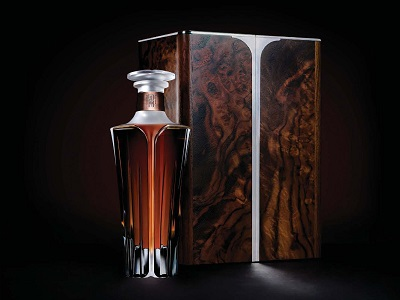
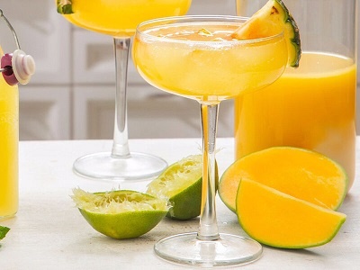
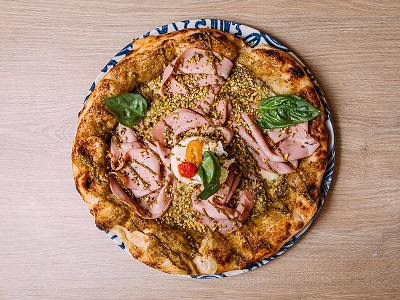
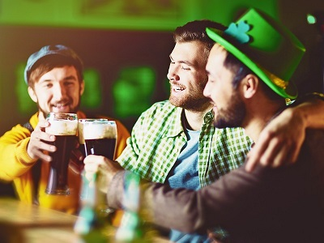

Nuestro elegante bar irlandés tradicional genuino del siglo XVI es famoso por sus paredes de piedra cortada,
pisos de losas de piedra y fuegos de césped. Nuestro amable personal es famoso por la calidez de su
bienvenida, su hospitalidad y su excelente servicio. No es de extrañar entonces que Paddy's Pub haya
sido durante mucho tiempo un favorito entre los lugareños y visitantes por igual.
El Paddy's Pub Tavern ha recibido a lo largo de los años a muchos personajes famosos a través de sus
puertas.
La princesa Grace y el príncipe Rainiero de Mónaco, Ted Kennedy, Garth Brooks, Neil Diamond, Katherine
Hepburn, John Wayne, Kate Beckinsdale, Pierse Brosnan, las estrellas de “Jackass”, por nombrar solo algunos.
Paddy's Pub es un "must do" en su visita a Dublín.
El escenario de Paddy's Pub también ha sido adornado por muchas caras famosas. The Paddy's Pub era un
lugar habitual para The Dubliners cuando estaban comenzando. The Chieftains, Planxty, Christy Moore y Johnny
McEvoy también actuaron regularmente en The Paddy's Pub. Más recientemente, TG4 filmó un especial de
Navidad con Imelda May en The Paddy's Pub.
El ambiente cálido y acogedor estilo club de The Paddy's Pub, nuestras magníficas ofertas de alimentos y
bebidas y la famosa hospitalidad lo están esperando.
Whiskey de la semana: Middleton very rare
Cocktail de la semana: Planter's Fizz
Plato de la semana: Lobster Pizza
Evento de la semana: Fiesta de San Patricio
